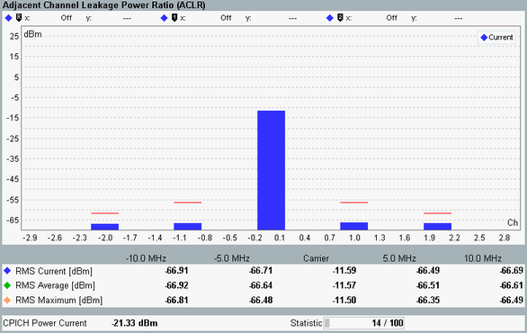

The ACLR results are measured in the "Preselected Slot". The results are displayed in a bar graph and as a table of statistical results.

The method of measurement ensures that the results correspond to the ACLR specified in 3GPP TS 25.141, section 6.5.2.2, where a WCDMA channel filter is used. According to the specification, ACLR tests must be carried out at maximum output power of the NodeB.
The central bar shows the power at the nominal carrier downlink frequency. The bars ±1 correspond to the 1st adjacent channels (±5 MHz from the DL frequency) and the 2nd adjacent channels (±10 MHz from the DL frequency). Either the "Current", "Average" or "Maximum" values can be displayed in the bar graph. The table below the bar graph provides all these values plus the current CPICH power averaged over a frame. For CPICH power, only channels with channelization code c256, 0 are considered.
The adjacent channel powers can be displayed as relative power levels (dB) referenced to the carrier power or as absolute power levels (dBm). The absolute power levels are derived from the relative power levels via a conversion procedure. For current values, the conversion is based on the current carrier power. For average and maximum values, it is based on the average carrier power.
For additional information, refer to "Common View Elements".